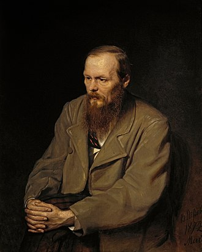

About Fyodor Dostoevsky
Fyodor Dostoevsky (1821–1881) was one of Russia's most celebrated authors, known for his profound explorations of human nature, morality, and existential crises. His novels reflect the tumultuous political and social changes of 19th-century Russia, delving into themes of faith, suffering, and redemption.
Despite his hardships—including exile in Siberia, epilepsy, and financial struggles—Dostoevsky's works remain a testament to resilience and the power of storytelling.
Major Works

The Impact of Dostoevsky’s Works
Dostoevsky's novels shaped modern psychology, literature, and philosophy. Sigmund Freud hailed him as a literary genius whose works anticipate psychoanalysis. Nietzsche admired Dostoevsky's existential themes, and his characters inspired countless writers, including Franz Kafka and Albert Camus.
Works like "Crime and Punishment" challenge readers to grapple with moral ambiguity, while "The Brothers Karamazov" explores faith, doubt, and family dynamics with unparalleled depth.